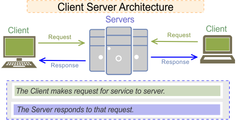
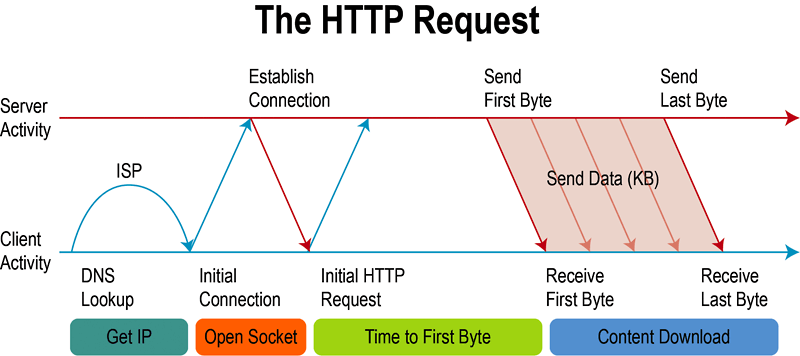

Front End Development Part 1

HTML Tags & Semantic Markup
The Web
Common Terms
Web Browser
A web browser (commonly referred to as a browser) is a software application for accessing information on the World Wide Web. Each individual web page, image, and video is identified by a distinct URL, enabling browsers to retrieve and display them on the user's device.
Web Server
Refers to server software, or hardware dedicated to running said software, that can serve contents to the World Wide Web. A web server processes incoming network requests over HTTP and several other related protocols
Search engine
Software system that is designed to search for information on the World Wide Web. The search results are generally presented in a line of results, often referred to as search engine results pages (SERPs). The information may be a mix of web pages, images, videos, infographics, articles, research papers and other types of files.
Domain name
Identification string that defines a realm of administrative autonomy, authority or control within the Internet.
In 2017, 330.6 million domain names had been registered.
Domain name
188.166.156.104 / dankov.me
Domain Name System (DNS)
Hierarchical decentralized naming system for computers, services, or other resources connected to the Internet or a private network. It associates various information with domain names assigned to each of the participating entities.
Most prominently, it translates more readily memorized domain names to the numerical IP addresses needed for locating and identifying computer services and devices with the underlying network protocols. By providing a worldwide, distributed directory service, the Domain Name System has been an essential component of the functionality of the Internet since 1985.
Domain Name Server / Name server
A name server is a computer application that implements a network service for providing responses to queries against a directory service. It translates an often humanly meaningful, text-based identifier to a system-internal, often numeric identification or addressing component. This service is performed by the server in response to a service protocol request.
An example of a name server is the server component of the Domain Name System (DNS), one of the two principal namespaces of the Internet. The most important function of DNS servers is the translation (resolution) of human-memorable domain names and hostnames into the corresponding numeric Internet Protocol (IP) addresses, the second principal name space of the Internet which is used to identify and locate computer systems and resources on the Internet.


Semantic HTML
What is Semantic HTML?
Semantic HTML or semantic markup is HTML that introduces meaning to the web page rather than just presentation. For example, a
tag indicates that the enclosed text is a paragraph. This is both semantic and presentational, because people know what paragraphs are and browsers know how to display them.
Why You Should Care About Semantics
The benefit of writing semantic HTML stems from what should be the driving goal of any web page — the desire to communicate
By adding semantic tags to your document, you provide additional information about that document, which aids in communication.
Specifically, semantic tags make it clear to the browser what the meaning of a page and its content is. That clarity is also communicated with search engines, ensuring that the right pages are delivered for the right queries.
Use Semantic Tags Correctly
When you want to use semantic tags to convey meaning rather than for presentation purposes, you need to be careful that you don't use them incorrectly simply for their common display properties.
Tags
Semantic Tags - header
<header>
Represents introductory content, typically a group of introductory or navigational aids. It may contain some heading elements but also other elements like a logo, a search form, an author name, and so on.
Semantic Tags - nav
<nav>
Represents a section of a page whose purpose is to provide navigation links, either within the current document or to other documents. Common examples of navigation sections are menus, tables of contents, and indexes.
Semantic Tags - main
<main>
Represents the dominant content of the 'body' of a document. The main content area consists of content that is directly related to or expands upon the central topic of a document, or the central functionality of an application.
Semantic Tags - aside
<aside>
Represents a portion of a document whose content is only indirectly related to the document's main content. Asides are frequently presented as sidebars or call-out boxes.
Semantic Tags - footer
<footer>
Represents a footer for its nearest sectioning content or sectioning root element. A footer typically contains information about the author of the section, copyright data or links to related documents.
Semantic Tags - article
<article>
Represents a self-contained composition in a document, page, application, or site, which is intended to be independently distributable or reusable (e.g., in syndication). Examples include: a forum post, a magazine or newspaper article, or a blog entry.
Semantic Tags - figcaption
<figcaption>
Represents a caption or legend for the rest of the contents its parent 'figure' element, if any.
Semantic Tags - figure
<figure>
Represents self-contained content, frequently with a caption 'figcaption', and is typically referenced as a single unit.
Semantic Tags - mark
<mark>
Represents text which is marked or highlighted for reference or notation purposes, due to the marked passage's relevance or importance in the enclosing context.
Semantic Tags - section
<section>
Represents a standalone section — which doesn't have a more specific semantic element to represent it — contained within an HTML document. Typically, but not always, sections have a heading.
Semantic Tags - time
<time>
Represents a specific period in time. It may include the datetime attribute to translate dates into machine-readable format, allowing for better search engine results or custom features such as reminders.
Semantic Tags - details
<details>
Creates a disclosure widget in which information is visible only when the widget is toggled into an "open" state. A summary or label can be provided using the 'summary' element.
Semantic Tags - summary
<summary>
specifies a summary, caption, or legend for a 'details' element's disclosure box. Clicking the 'summary' element toggles the state of the parent 'details' element open and closed.
More Metadata
Microdata
WHATWG HTML specification used to nest metadata within existing content on web pages.
Search engines, web crawlers, and browsers can extract and process Microdata from a web page and use it to provide a richer browsing experience for users.
Search engines benefit greatly from direct access to this structured data because it allows them to understand the information on web pages and provide more relevant results to users.
Schema.org
Schema.org is a collaborative, community activity with a mission to create, maintain, and promote schemas for structured data on the Internet, on web pages, in email messages, and beyond.